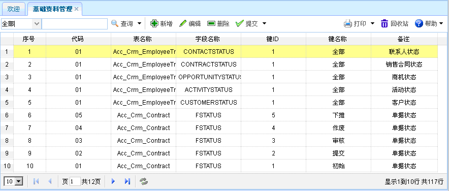
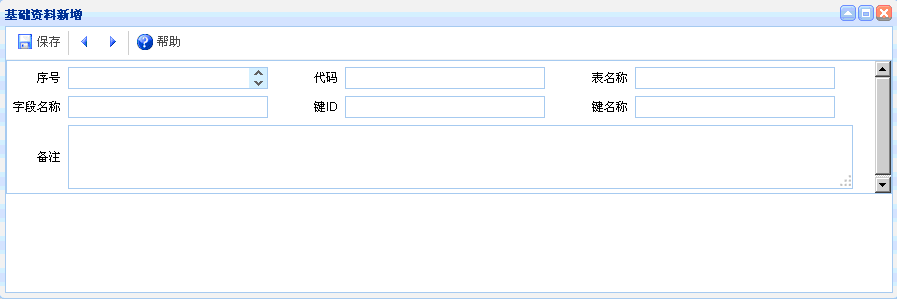
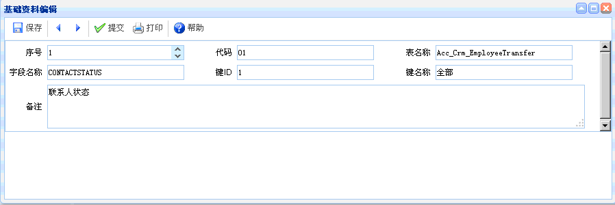

基础资料管理
基础资料管理
概述：基础资料管理主要是用来存放下拉框中的数据信息。
功能介绍：点击【基础信息】进入【基础资料管理】 ，打开基础资料管理页面，如下图所示。功能主要包括：查询、新增、编辑、删除、提交。

图表6-x1-1【基础资料管理】
图表6-x1-1【基础资料管理】
【查询】：通过设置查询条件，查询出符合条件的数据，直接点击查询按钮即可列出相关信息。查询中包含高级查询。
【新增】：点击新增按钮，如下图所示。新增完毕，点击保存。

图表6-x1-2【基础资料新增】
图表6-x1-2【基础资料新增】
【编辑】：选中某项基础资料信息，点击编辑按钮后，出现如下图所示内容。可对基础资料信息进行编辑、提交操作。

图表6-x1-3【基础资料编辑】
图表6-x1-3【基础资料编辑】
【删除】：选中某项基础资料信息后，点击删除，即可删除没有需要的信息，已提交的单据不能删除。
【提交】：选中某项基础资料信息后，点击提交，可提交该基础资料信息，已提交的数据不能再次提交，也可撤消提交。
 常见问题
常见问题
1、？
2、？
3、？